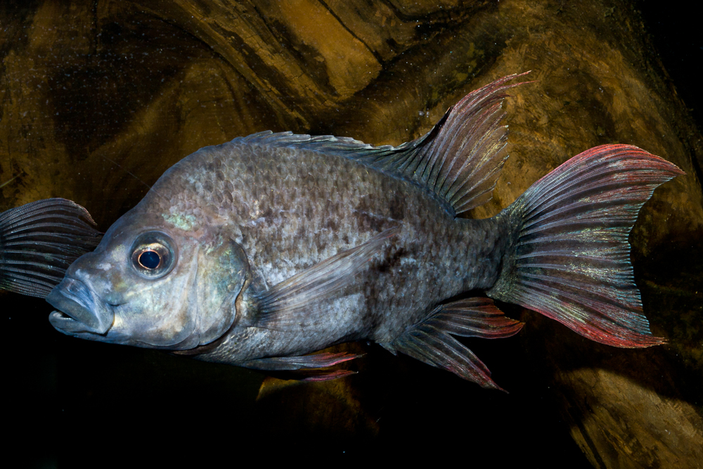

The family Aplocheilidae currently holds 16 species within 2 genera and can be
found in Asia, Madagascar,and the Seychelles. Only the genera Pachypanchax is found on Madagascar.

The subfamily Bedotiinae (of the family Melanotaeniidae) consists of two genera
(Bedotia and Rheocles) and 16 species. Bedotia and Rheocles are endemic to Madagascar.

The genus Paretroplus belongs to the subfamily Etroplinae of the family Cichlidae.
It is endemic to Madagascar with 13 currently recognized species.

The subfamily Paratilapiinae belongs to the family Cichlidae and occupies a
position between the Etroplinae and Ptychochrominae. It is endemic to Madagascar with 2 currently
recognized species.

The subfamily Ptychochrominae belongs to the family Cichlidae.It is endemic to
Madagascar with 4 genera and 15 currently recognized species.

The family Anchariidae is endemic to Madagascar with 2 genera and 6 currently
recognized species.